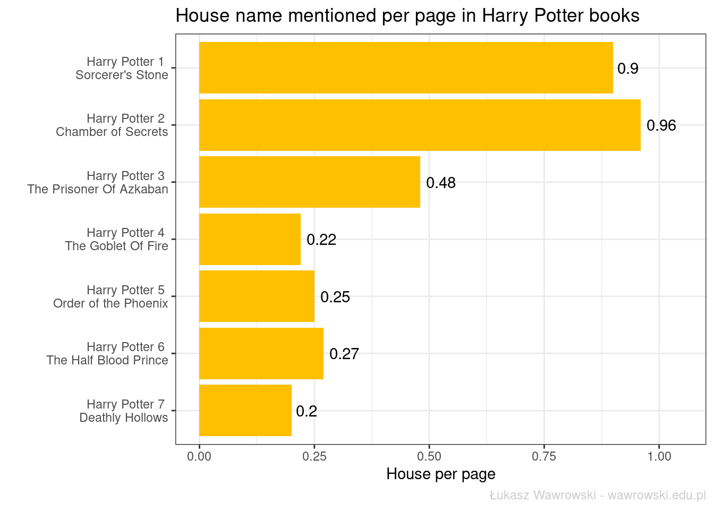

library(tidyverse)
library(tidytext)
words_in_book <- function(book, selected_words){
hp <- read_lines(book) # wczytanie tekstu
df <- data.frame(org_line=as.character(hp)) %>%
filter(str_length(org_line) > 0) %>% # usunięcie pustych wierszy
mutate(book_name = book %>%
str_replace_all("txt/", "") %>% # usunięcie ścieżki z nazwy książki
str_replace_all(".txt", ""), # usunięcie rozszerzenia z nazwy książki
line = org_line %>%
str_replace_all("[^[:alnum:] ]", " ")) %>% # usunięcie znaków niealfanumerycznych
unnest_tokens(output = words, input = line) # rodzielenie tekstu książki na pojedyńcze wyrazy
houses <- df %>%
mutate(house=str_match(words, selected_words)) %>% # identyfikacja szukanych słów
filter(!is.na(house)) # usunięcie wszystkich pozostałych
return(houses)
}Do dziś pamiętam dzień, w którym dostałem do ręki pierwsze książki o przygodach Harrego Pottera. Wiele lat później zainteresowanie serią powróciło, ale tym razem od strony statystycznej. Czy Gryffindor jako dom głównego bohatera jest najczęściej wymienianym domem w książkach sagi? Przekonajmy się.
Dane
Wyszukując w Google frazę “harry potter txt” znalazłem wiele stron z tekstową wersją książki. Ostatecznie dane do analizy pobrałem stąd. Posługiwanie się angielską wersją książki będzie prostsze z punktu widzenia analizy, ponieważ nie trzeba będzie rozważać wszystkich odmian i przypadków nazwy domu.
W celu wydobycia nazw domów z tekstu wszystkich książek napisałem funkcję, która w całkiem elegancki sposób się tym zajmuje i może także posłużyć w innych analizach tekstu.
Następnie deklaruję jakie pliki chcę przeanalizować oraz jakie słowa mnie interesują.
books <- str_c("txt/", list.files("txt"))
hp_houses <- map_df(books, words_in_book,
selected_words = "gryffindor|hufflepuff|ravenclaw|slytherin")Wykorzystuję tutaj funkcję map_df z pakietu purrr, który jest wspaniałym narzędziem w sytuacji, w której nie chcemy bawić się w pętle. Pokazany powyżej zapis argumentu selected_words powoduje dopasowanie także liczby mnogiej nazwy domu. W rezultacie powstał zbiór zawierający 1206 obserwacji oraz 4 kolumny - z fragmentem książki, tytułem książki, pasującym słowem oraz nazwą domu w Hogwarcie.
Częstości
Dokonujemy jeszcze drobnych przekształceń w tekście:
hp_houses <- hp_houses %>%
mutate(book=str_replace(book_name, " - ", " \n"), # tytuł książki w dwóch wierszach
house=str_c(str_to_upper(str_sub(house,1,1)),
str_sub(house,2,str_length(house)))) # nazwa domu z wielkiej literyNastępnie zliczamy wystąpienia danego domu w ramach książki.
hp_houses %>%
group_by(book, house) %>%
count() %>%
ungroup() %>%
mutate(book_fct=factor(book, levels = unique(book), ordered = T),
house_fct=factor(house, levels = unique(house), ordered = T)) %>%
ggplot(aes(x = fct_rev(book_fct), y = n, fill = fct_rev(house))) +
geom_col(position = "dodge") +
geom_text(aes(label = n), position = position_dodge(0.95), hjust = -0.2) +
xlab("") +
ylab("Count") +
ylim(0,130) +
scale_fill_manual(values = rev(c("#670001", "#FF9D0A", "#002E5F", "#2E751C")), name = "") +
coord_flip() +
labs(caption = "Łukasz Wawrowski - wawrowski.edu.pl") +
theme_bw() +
theme(legend.position = "top",
plot.caption = element_text(color = "grey80")) +
guides(fill = guide_legend(reverse = TRUE)) +
ggtitle("Occurence of house name in Harry Potter books")We wszystkich częściach sagi oprócz drugiej (Komnata Tajemnic) zgodnie z oczekiwaniami dominuje Gryffindor. Slytherin zwykle jest na drugim miejscu. Wyjątek stanowi wspomniana część druga (pierwsze miejsce) oraz siódma, gdzie zajmuje trzecie miejsce przegrywając jeszcze z Ravenclawem.
Procentowo wygląda to następująco:
hp_houses %>%
group_by(book) %>%
count(house) %>%
mutate(percent=n/sum(n),
percent_label=round_preserve_sum(percent*100)) %>%
ungroup() %>%
mutate(book_fct=factor(book, levels = unique(book), ordered = T),
house_fct=factor(house, levels = unique(house), ordered = T)) %>%
ggplot(aes(x = fct_rev(book_fct), y = percent, fill = fct_rev(house))) +
geom_col() +
geom_text(aes(label = percent_label), position = position_stack(0.5), color = "white") +
xlab("") +
ylab("Percentage") +
scale_fill_manual(values = rev(c("#670001", "#FF9D0A", "#002E5F", "#2E751C")), name = "") +
scale_y_continuous(labels=scales::percent) +
coord_flip() +
labs(caption = "Łukasz Wawrowski - wawrowski.edu.pl") +
theme_bw() +
theme(legend.position = "top",
plot.caption = element_text(color = "grey80")) +
guides(fill = guide_legend(reverse = TRUE)) +
ggtitle("Occurence of house name in Harry Potter books (in %)")
Najwięcej Gryffindoru było w trzeciej części przygód Harrego Pottera, Hufflepuffu w czwartej, Ravenclawu w siódmej, a Slytherinu w drugiej części.
Dodatkowo możemy wyznaczyć wskaźnik liczby wzmianek o domach w odniesieniu do liczby stron książki danej części HP. Liczbę stron znalazłem na tej stronie i bezpośrednio dodałem do istniejących danych.
pages <- hp_houses %>%
distinct(book) %>%
mutate(pages=c(223, 251, 317, 636, 766, 607, 607))
hp_houses %>%
count(book) %>%
inner_join(., pages, by = "book") %>%
mutate(house_per_page=round(n/pages,2),
book_fct=factor(book, levels = unique(book), ordered = T)) %>%
ggplot(aes(x = fct_rev(book_fct), y = house_per_page)) +
geom_col(fill = "#FFC001") +
geom_text(aes(label = house_per_page), hjust = -0.2) +
coord_flip() +
xlab("") +
ylab("House per page") +
ylim(0,1.05) +
labs(caption = "Łukasz Wawrowski - wawrowski.edu.pl") +
theme_bw() +
theme(plot.caption = element_text(color = "grey80")) +
ggtitle("House name mentioned per page in Harry Potter books")
W pierwszych dwóch częściach nazwa domu padała prawie raz na stronę. W Więźniu z Azkabanu średnio na co drugiej stronie znajdowało się odwołanie do nazwy domu. Z kolei w ostatnich czterech częściach wartość ta spadła do około 1/4 zapewne ze względu na przeniesienie akcji poza Hogwart.
Wszystkie kody są na githubie.